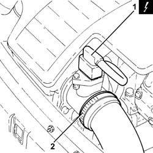
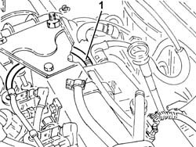
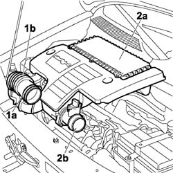
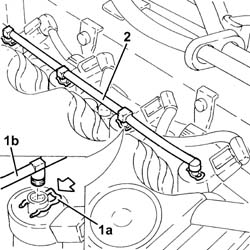
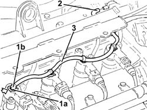

1060F52 Fuel return PIPE from INJECTORS - R.R.
- Path
- Procedures > 10 ENGINE > 1060 DIESEL FUEL INJECTION > 1060F injectors and lines > 1060F52 Fuel return PIPE from INJECTORS - R.R.
- Kind
- repair procedure (removal / refitting; the operation number is the code)
- Applies to
- all engines; all production periods
- Interactive page
- https://sloeber94.github.io/elrnDB-fDbl/en/#/2584410
Applies to: all engines; all production periods
 Removing
Removing
 Refitting
RefittingEnsure that the ignition key is in the OFF position, then disconnect the negative battery terminal.
 | Name | Connector |
|---|---|---|
- | Battery | A1 |
1. Disconnect the electrical connection from the air flow meter.
| Name | Connector |
|---|---|---|
1 | Air flow meter | K41 |
2. Loosen the band and disconnect the the turbocharger air inlet sleeve from the rigid pipe, air flow meter side.

Applies to: all engines; all production periods
Removing
Refitting1. Disconnect the pipe from the injectors to the fuel recovery manifold, fuel recovery manifold side.

Applies to: all engines; all production periods
1. Loosen the band (1a) and disconnect the flexible hose (1b) from the air intake.
2. Remove the air filter (2a) complete with air flow meter (2b) by releasing from the underlying pins and then from the rear fastening.

Applies to: all engines; all production periods
1. Push clips (1a) by hand and disconnect the pipe from the injectors to the fuel recovery manifold (1b), injectors side.
2. Remove the pipe from the injectors to the fuel recovery manifold.

Applies to: all engines; all production periods
1. Push the clips (1a) by hand and disconnect the fuel return pipe from the fuel injectors (1b), injector side.
2. Disconnect the fuel return pipe from the fuel injectors, single fuel manifold pipe side.
3. Release the fuel return pipe from the fuel injectors from the fixing band and remove it.

Applies to: all engines; all production periods
Refitting
RemovingPlace the pipe from the injectors to the fuel recovery manifold back in its housing, fit the connectors into their seats on the injectors and push home until the clip clicks into place.
Disconnect the pipe from the injectors to the fuel recovery manifold, fuel recovery manifold side.
Applies to: all engines; all production periods
Refitting
RemovingRefit the fuel return pipe from the injectors in its seating and secure it with its band.
Connect the fuel return pipe from the fuel injectors, single fuel manifold pipe side.
Connect the fuel return pipe from the fuel injectors, fuel injectors side, pushing it until the clips can be heard clicking into place.
Refit the air filter complete with air flow meter, engaging it on the rear attachment and then on the underlying pins.
Connect the hose to the air intake on the crossmember and tighten the fixing band.
Connect the air intake sleeve to the turbocharger, air flow meter side, and tighten the band.
Connect the electrical connection to the air flow meter.
| Name | Connector |
|---|---|---|
- | Air flow meter | K41 |
Connect the battery negative terminal.
| Name | Connector |
|---|---|---|
- | Battery | A1 |